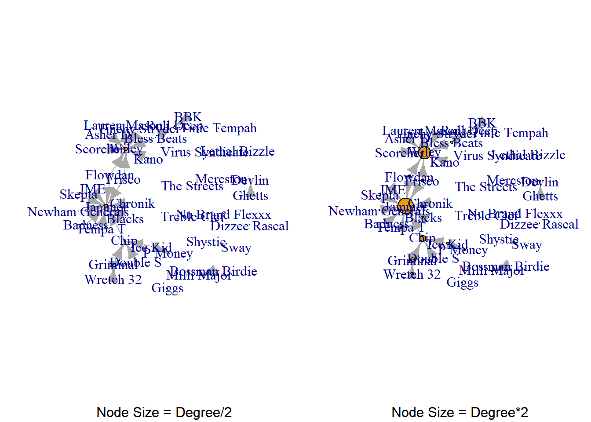

One way to analyse a social network is to analyse the people in those networks. In general terms,we can report on individuals based on the structural position they hold within a network. The concept and various measures of centrality allows us to do so. Ultimately, as the scientist, you can tell stories about the individuals in your network based on how central of peripheral they are in the group. In other words, measures of centrality tell stories about the individuals in your network.
I encourage you to think about these measures in terms of an individuals prominence and influence over the network. In this chapter, we will be using four measures, degree centrality, betweenness centrality, closeness centrality, and constraint. First, let’s go through these one-by-one showing how to measure these in igraph. I won’t go too deep into the maths behind the algorithms, but will focus more on substantively what it means. Then, I will show you how to construct a data frame with all of this information so you can then use these to run further analysis (i.e. perhaps regressing centrality on career success). You may have multiple years worth of networks and could create line graphs of centrality for each node over time to see their personal change overtime.
Before we begin, let’s bring in the Grime data we have been using so far. We know by now we need to remove self loops in this edgelist.
You may be interested in finding out who are some prominent individuals in your network. When I say prominent, I really mean those what are “well connected” or perhaps “popular”. Someone who is very prominent in the network is likely positioned very central compared to others.
12.1.1 Degree Centrality and Strength
Degree centrality is simply a count of the number of ties that a node has with others in the network. Put simply, it is a count of how many neighbours any given node has.
degree(grime_08_clean)
Asher D Dizzee Rascal Lethal Bizzle Scorcher Bless Beats
1 0 0 1 2
Flowdan Tinchy Stryder Frisco Kano Treble Clef
2 1 2 1 0
Shystie Blacks Badness Chronik Tempa T
0 1 1 1 1
Newham Generals Skepta JME Chip BBK
1 1 1 4 1
Virus Syndicate Ghetts Mercston Double S Griminal
0 1 0 1 3
Ice Kid Nu Brand Flexxx Wretch 32 Wiley Bossman Birdie
2 0 2 8 1
The Streets Sway Tinie Tempah Giggs Jammer
0 0 0 0 10
Roll Deep Devlin P Money Lauren Mason Milli Major
2 1 1 1 1
There is a variation of degree centrality called strength(), which accounts for the weighted nature of the edges. Instead of just counting the number of neighbours, it sums the weights of the connections to each neighbor, reflecting both the number of connections and their strength (or whatever the edge weight represents).
strength(grime_08_clean)
Asher D Dizzee Rascal Lethal Bizzle Scorcher Bless Beats
1 0 0 1 2
Flowdan Tinchy Stryder Frisco Kano Treble Clef
2 1 2 1 0
Shystie Blacks Badness Chronik Tempa T
0 1 1 1 1
Newham Generals Skepta JME Chip BBK
1 1 1 4 1
Virus Syndicate Ghetts Mercston Double S Griminal
0 1 0 1 3
Ice Kid Nu Brand Flexxx Wretch 32 Wiley Bossman Birdie
2 0 2 8 1
The Streets Sway Tinie Tempah Giggs Jammer
0 0 0 0 10
Roll Deep Devlin P Money Lauren Mason Milli Major
2 1 1 1 1
So, we see that Wiley and Jammer are very popular in this network. However, since this is a directed network, there is even more that we can tease out from this in terms of their outgoing and incoming connections. Put simply, we can get the individual’s strength (i.e. the number of connections and edge weight). We do this by using the ‘mode =’ argument from the strength() function. “in” takes the incoming ties and “out” gets the outgoing ties.
Asher D Dizzee Rascal Lethal Bizzle Scorcher Bless Beats
1 0 0 1 2
Flowdan Tinchy Stryder Frisco Kano Treble Clef
2 1 2 1 0
Shystie Blacks Badness Chronik Tempa T
0 1 1 1 1
Newham Generals Skepta JME Chip BBK
1 1 1 1 1
Virus Syndicate Ghetts Mercston Double S Griminal
0 1 0 1 2
Ice Kid Nu Brand Flexxx Wretch 32 Wiley Bossman Birdie
2 0 1 1 1
The Streets Sway Tinie Tempah Giggs Jammer
0 0 0 0 0
Roll Deep Devlin P Money Lauren Mason Milli Major
0 0 0 0 0
12.1.2 Closeness Centrality
Another measurement of centrality that captures the prominence of a node is closeness centrality. The closeness centrality measure uses the average length of the shortest path from one node to all other nodes in the network. Simply, it measures how close a node is to others in the network. A node with a high closeness centrality is considered more prominent in the network because they can reach all others in the network quickly.
closeness(grime_08_clean)
Asher D Dizzee Rascal Lethal Bizzle Scorcher Bless Beats
0.3333333 NaN NaN 0.3333333 0.2500000
Flowdan Tinchy Stryder Frisco Kano Treble Clef
0.2500000 0.3333333 0.2500000 0.3333333 NaN
Shystie Blacks Badness Chronik Tempa T
NaN 1.0000000 1.0000000 1.0000000 1.0000000
Newham Generals Skepta JME Chip BBK
1.0000000 1.0000000 1.0000000 1.0000000 1.0000000
Virus Syndicate Ghetts Mercston Double S Griminal
NaN 1.0000000 NaN 0.3333333 0.2500000
Ice Kid Nu Brand Flexxx Wretch 32 Wiley Bossman Birdie
0.2500000 NaN 0.1666667 1.0000000 1.0000000
The Streets Sway Tinie Tempah Giggs Jammer
NaN NaN NaN NaN NaN
Roll Deep Devlin P Money Lauren Mason Milli Major
NaN NaN NaN NaN NaN
Closeness is a bit of a strange one. You have to take into consideration the direction of the network. At its core, the maths behind this measure identifies the possible paths that lead one node to another in the network. This takes into consideration the direction of the network. You have to identify the number of “steps” it takes one node to reach all the possible nodes connected to them across the network. Then, you divide that score by 1 and this gives the closeness score.
Take Frisco for example (this is one of the nodes that sits in between the two big hubs). Because of the direction of the network, the furthest node across the network that Frisco can reach is Lauren Mason through Wiley. Going the other way, the furthest Frisco can go is to Jammer. So, this node can reach 3 alters. It takes one step to Jammer, 1 step to Wiley, and 1 step to Lauren Mason. This is a total distance of 4 steps. 1/4 = 0.25 closeness centrality score.
Some of you noted that certain nodes had a score of 1 - like Tempa T. If you look at Tempa T, this node appears to be connected to a big hub of the network (Jammer’s). However, pay attention to the direction of the ties. Jammer is as far as Tempa T can get. So, the maths for his closeness score is 1 step. 1/1 = 1.
This is a weakness of closeness centrality! Because a node with a closeness of 1 may only have 1 connection. But a node with a closeness of .25 (say Frisco) has more! This is why we use multiple scores to tell our story. Mainly, I tend to use degree (or directed strength) and betweenness since they are more robust.
12.1.3 Betweenness Centrality
Next, let’s talk about influential people in a network. Influence has to do with controlling the flow of resources (e.g. information etc.) within a network or rather, being involved with the transition of resources. The most influential individuals, perhaps you could think of them as powerful, are highly “central” to the ongoings of the network. Betweenness centrality is a measure that can help us capture this type of information.
Betweenness centrality measures the number of times an individual node lies on the shortest path (geodesic) between any two other nodes in the network. A geodesic is the shortest possible path connecting two nodes. Imagine a network as a set of people connected by relationships, where you are trying to travel from one person to another. The shortest path represents the quickest way to get from one node to another in the network. Betweenness centrality counts how often a specific node appears as a part of these shortest paths, reflecting its role in connecting different parts of the network.
For this measure, whether the network is directed is important. Consider ties as roads: if there are two lanes (one for going and one for returning), information can flow in both directions. However, if there is only a one-way road, information can only travel in one direction. In a directed network, a node may appear on the geodesic, but if it only has outgoing connections, it might not have much influence on others, as it cannot receive information from other nodes.
betweenness(grime_08_clean)
Asher D Dizzee Rascal Lethal Bizzle Scorcher Bless Beats
0 0 0 0 0
Flowdan Tinchy Stryder Frisco Kano Treble Clef
0 0 0 0 0
Shystie Blacks Badness Chronik Tempa T
0 0 0 0 0
Newham Generals Skepta JME Chip BBK
0 0 0 4 0
Virus Syndicate Ghetts Mercston Double S Griminal
0 0 0 0 2
Ice Kid Nu Brand Flexxx Wretch 32 Wiley Bossman Birdie
0 0 0 7 0
The Streets Sway Tinie Tempah Giggs Jammer
0 0 0 0 0
Roll Deep Devlin P Money Lauren Mason Milli Major
0 0 0 0 0
Compare these numbers (the betweenness) with the artist’s degree centrality. What do you notice? You may notice that those who are highly prominent aren’t necessarily the most influential. Take Wiley, for example. He is among the most central (a high degree) but, he has low influence. Why is this? Well, look at the direction of the ties! He has a lot of incoming ties and not many outgoing meaning that he cannot (if we stick with the directedness of the graph) influence others.
12.1.4 Constraint
Constraint is a measure of a node’s embeddedness in a specific portion of the network, indicating how much its connections are limited to a small set of other nodes. A node with high constraint has fewer opportunities to interact with a broader range of nodes, as its ties are concentrated within a small cluster. This measure assesses the diversity of connections, not in terms of the types of ties (such as strong or weak edges), but in terms of the variety of other nodes it connects to.
Constraint is considered a measure of influence because, those who have a low constraint have access to diverse resources within the network. They may bridge across subgroups in the network which means that they may have access to nonredundant (new) resources.
constraint(grime_08_clean)
Asher D Dizzee Rascal Lethal Bizzle Scorcher Bless Beats
1.0000000 NaN NaN 1.0000000 0.5000000
Flowdan Tinchy Stryder Frisco Kano Treble Clef
0.5000000 1.0000000 0.5000000 1.0000000 NaN
Shystie Blacks Badness Chronik Tempa T
NaN 1.0000000 1.0000000 1.0000000 1.0000000
Newham Generals Skepta JME Chip BBK
1.0000000 1.0000000 1.0000000 0.2500000 1.0000000
Virus Syndicate Ghetts Mercston Double S Griminal
NaN 1.0000000 NaN 1.0000000 0.5555556
Ice Kid Nu Brand Flexxx Wretch 32 Wiley Bossman Birdie
0.5000000 NaN 1.0000000 0.1250000 1.0000000
The Streets Sway Tinie Tempah Giggs Jammer
NaN NaN NaN NaN 0.1000000
Roll Deep Devlin P Money Lauren Mason Milli Major
0.5000000 1.0000000 1.0000000 1.0000000 1.0000000
12.1.5 Visualising central nodes
The vertex.size argument that accompanies the plot() function in igraph gives you the option to visualise those in the network based on their centrality scores.
Let’s say we want to visualise the degee centrality in order to demonstrate who is prominent in the network. Use the chunk below and see how we combine the plot() with the degree() functions from igraph.
Pretty cool, right? Bear in mind that this literally assigned the node size to equal the value of the degree centrality. So, if a node has a degree value of 100, the their size will equal 100. This will likely crowd out other nodes in your visualisation. If this occurs, you may try dividing the degree scores by a constant (for example. 10). This will divide every node’s degree score, so the visual will still represent the relative differences between their degree. To do this simply add a division after the degree() argument. If the opposite occurs (i.e. the node’s degree centrality is too small to visualise) you can multiply it by a constant. See the examples below.
par(mfrow =c(1, 2))set.seed(123)plot(grime_08_clean, vertex.size =degree(grime_08_clean)/2, sub ="Node Size = Degree/2")set.seed(123)plot(grime_08_clean, vertex.size =degree(grime_08_clean)*2, sub ="Node Size = Degree*2")

12.1.6 Final thoughts on measures
There are many measures that you can use to tell a story about individuals in your network. They all rely on sightly different maths and algorithms. As such, I encourage you to learn, at least on a fundamental level what each measure captures so you can understant what the measure is really telling you.
Furthermore, it may make sense to remove isolates from the network and only keep the main component of the network. Depending on what measures you are using, isolates are often left out. For example, you can’t get the constraint measure for an isolate. So, you may consider only including those with connections in your analysis. This depends on what you are trying to do. I encourage you to be mindful of what you are asking and then consider if you need everyone in the network (i.e. including isolates) or if your question only involves those with connections to others.
12.2 Tabulating Centrality Measures
We can now make this a dataframe with all the information that we have created. To do this, we need to create objects (vectors) with all of the measures we care for. Then we can assign these to a data frame that we can use.
So far, you have been just using the arguments directly and seeing them populate in the console. A good practice is to make them objects so you can use them in the future. This way, you do not have to re run the function every time. To do this, simply use the assignment operator.
Note that these all create vector value objects in your environment from which you can create a table with all of these. You ca combine these into a table using the data.frame() function then list each column setting them equal to the appropriate vectors. I also create a column with the year that these data are pulled from. Finally, I name the column that lists the node names.
grime_degree grime_strength grime_close grime_constraint
Asher D 1 1 0.3333333 1.0
Dizzee Rascal 0 0 NaN NaN
Lethal Bizzle 0 0 NaN NaN
Scorcher 1 1 0.3333333 1.0
Bless Beats 2 2 0.2500000 0.5
Flowdan 2 2 0.2500000 0.5
grime_betweenness year name
Asher D 0 2008 Asher D
Dizzee Rascal 0 2008 Dizzee Rascal
Lethal Bizzle 0 2008 Lethal Bizzle
Scorcher 0 2008 Scorcher
Bless Beats 0 2008 Bless Beats
Flowdan 0 2008 Flowdan
Now, you can use your imagination on the types of things you can do with this information. What types of analyses can you think of? Maybe centrality is associated with some other attribute or variable. This network, for example, is of musicians. Perhaps centrality is associated with success, popularity, or other accolades. Perhaps, central positions are filled more by one type of artist than another (e.g. male/female, one form of music vs another). You could perform correlations, differences of means, regressions etc. The possibilities are plenty!!